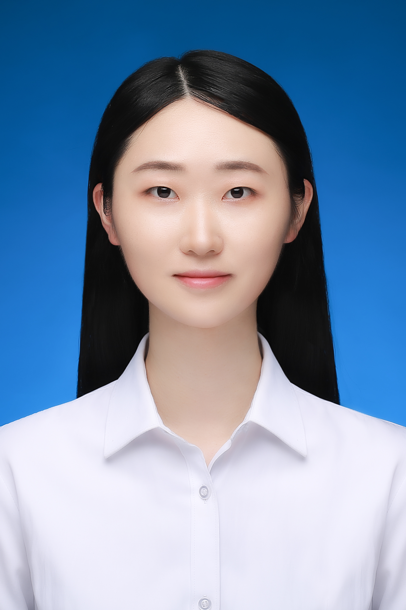

安徽大学结构模式与视觉学习研究组主要依托安徽大学计算机科学与技术学院，多模态认知计算安徽省重点实验室等平台。研究组致力于结构模式识别理论方法及其在计算机视觉与图数据计算中的应用研究。 主要研究方向包括：图机器学习、事件视觉计算、多模态信息融合，细粒度视觉分类、医学影像分析、遥感图像分析以及AI for Science等。部分科研成果应用在安徽省医学影像云平台。 研究组目前承担国家自然科学基金项目、安徽省重点研发计划、安徽省优青、安徽省教育厅协同创新项目等国家和省部级科研项目。 研究组现有专职教师4人，包括教授1人，副教授2人，讲师1人组成，在读博士、硕士生近50人。形成了一支以青年科研骨干为主体和研究生队伍为主力的研究梯队。
课题组招收博士研究生、硕士研究生，并接受该领域的博士后及访问学者！
|
|
 |
[04/2024] The paper "Learning Graph Attentions via Replicator Dynamics" has been accepted by TPAMI 2024 !
[03/2024] The paper "MutualFormer: Multi-Modal Representation Learning via Cross-Diffusion Attention" has been accepted by IJCV 2024 !
[02/2024] The paper "Event Stream-based Visual Object Tracking: A High-Resolution Benchmark Dataset and A Novel Baseline" has been accepted by CVPR 2024 !
[12/2023] The paper "HARDVS: Revisiting Human Activity Recognition with Dynamic Vision Sensors" has been accepted by AAAI 2024 !
State Space Model for New-Generation Network Alternative to Transformers: A Survey
Xiao Wang, Shiao Wang, Yuhe Ding, Yuehang Li, Wentao Wu, Yao Rong, Weizhe Kong, Ju Huang, Shihao Li, Haoxiang Yang, Ziwen Wang, Bo Jiang*, Chenglong Li, Yaowei Wang, Yonghong Tian, Jin Tang
arXiv preprint arXiv:2404.09516 2024
Robust Audio-Visual Contrastive Learning for Proposal-based Self-supervised Sound Source Localization in Videos
Hanyu Xuan, Zhiliang Wu, Jian Yang, Bo Jiang*, Lei Luo*, Xavier Alameda-Pineda, Yan Yan
IEEE Transactions on Pattern Analysis and Machine Intelligence (TPAMI) 2024
Generalizing Aggregation Functions in GNNs: Building High Capacity and Robust GNNs via Nonlinear Aggregation
Beibei Wang, Bo Jiang*, Jin Tang, Bin Luo
IEEE Transactions on Pattern Analysis and Machine Intelligence (TPAMI) 2023
Graph Neural Network Meets Sparse Representation: Graph Sparse Neural Networks via Exclusive Group Lasso
Bo Jiang, Beibei Wang, Si Chen, Jin Tang*, Bin Luo
IEEE Transactions on Pattern Analysis and Machine Intelligence (TPAMI) 2023
Gecns: Graph elastic convolutional networks for data representation
Bo Jiang, Beibei Wang, Jin Tang*, Bin Luo
IEEE Transactions on Pattern Analysis and Machine Intelligence (TPAMI) 2021
GDCNet: Graph Enrichment Learning via Graph Dropping Convolutional Networks
Bo Jiang*, Yong Chen, Beibei Wang, Haiyun Xu, Jin Tang
IEEE Transactions on Neural Networks and Learning Systems (TNNLS) 2023
Event Stream-based Visual Object Tracking: A High-Resolution Benchmark Dataset and A Novel Baseline
Xiao Wang, Shiao Wang, Chuanming Tang, Lin Zhu, Bo Jiang*, Yonghong Tian, Jin Tang
Proceedings of the IEEE/CVF Conference on Computer Vision and Pattern Recognition (CVPR) 2024
Structural Information Guided Multimodal Pre-training for Vehicle-centric Perception
Xiao Wang, Wentao Wu, Chenglong Li*, Zhicheng Zhao, Zhe Chen, Yukai Shi, Jin Tang
Proceedings of the AAAI Conference on Artificial Intelligence (AAAI) 2024
HARDVS: Revisiting Human Activity Recognition with Dynamic Vision Sensors
Xiao Wang, Zongzhen Wu, Bo Jiang*, Zhimin Bao, Lin Zhu, Guoqi Li, Yaowei Wang, Yonghong Tian
Proceedings of the AAAI Conference on Artificial Intelligence (AAAI) 2024
VisEvent: Reliable Object Tracking via Collaboration of Frame and Event Flows
Xiao Wang, Jianing Li, Lin Zhu, Zhipeng Zhang, Zhe Chen, Xin Li, Yaowei Wang*, Yonghong Tian, Feng Wu
IEEE Transactions on Cybernetics 2023
Beyond Greedy Search: Tracking by Multi-Agent Reinforcement Learning-based Beam Search
Xiao Wang, Zhe Chen*, Bo Jiang, Jin Tang*, Bin Luo, Dacheng Tao
IEEE Transactions on Image Processing (TIP) 2022
Fine-Grained Visual Classification via Internal Ensemble Learning Transformer
Qin Xu, Jiahui Wang, Bo Jiang*, Bin Luo
IEEE Transactions on Multimedia (TMM) 2023
AS3ITransUNet: Spatial-Spectral Interactive Transformer U-Net with Alternating Sampling for Hyperspectral Image Super-Resolution
Qin Xu, Shiji Liu, Jiahui Wang, Bo Jiang*, Jin Tang
IEEE Transactions on Geoscience and Remote Sensing (TGRS) 2023
Grouped Bidirectional LSTM Network and Multi-Stage Fusion Convolutional Transformer for Hyperspectral Image Classification
Qin Xu, Chao Yang, Jin Tang, Bin Luo*
IEEE Transactions on Geoscience and Remote Sensing (TGRS) 2022
Multimodal cross-layer bilinear pooling for RGBT tracking
Qin Xu, Yiming Mei, Jinpei Liu, Chenglong Li*
IEEE Transactions on Multimedia (TMM) 2022
Efficient synthetical clustering validity indexes for hierarchical clustering
Qin Xu*, Qiang Zhang, Jinpei liu, Bin Luo
Expert Systems with Applications 2020
Blind Quality Assessment for Cartoon Images
Yuan Chen, Yang Zhao, Shujie Li, Wangmeng Zuo, Wei Jia, Xiaoping Liu*
IEEE Transactions on Circuits and Systems for Video Technology (TCSVT) 2020
Learning Deep Blind Quality Assessment for Cartoon Images
Yuan Chen, Yang Zhao, Li Cao, Wei Jia, Xiaoping Liu*
IEEE Transactions on Neural Networks and Learning Systems (TNNLS) 2023
Regional Traditional Painting Generation Based on Controllable Disentanglement Model
Yang Zhao, Huaen Li, Zhao Zhang, Yuan Chen*, Qing Liu, Xiaojuan Zhang
IEEE Transactions on Circuits and Systems for Video Technology (TCSVT) 2023
ADRNet: Affine and Deformable Registration Networks for Multimodal Remote Sensing Images
Yun Xiao, Chunlei Zhang, Yuan Chen*, Bo Jiang, Jin Tang
IEEE Transactions on Geoscience and Remote Sensing (TGRS) 2024
Stereo Vision Conversion from Planar Videos Based on Temporal Multiplane Images
Shanding Diao, Yuan Chen, Yang Zhao*, Wei Jia, Zhao Zhang, Ronggang Wang*
Proceedings of the AAAI Conference on Artificial Intelligence (AAAI) 2024